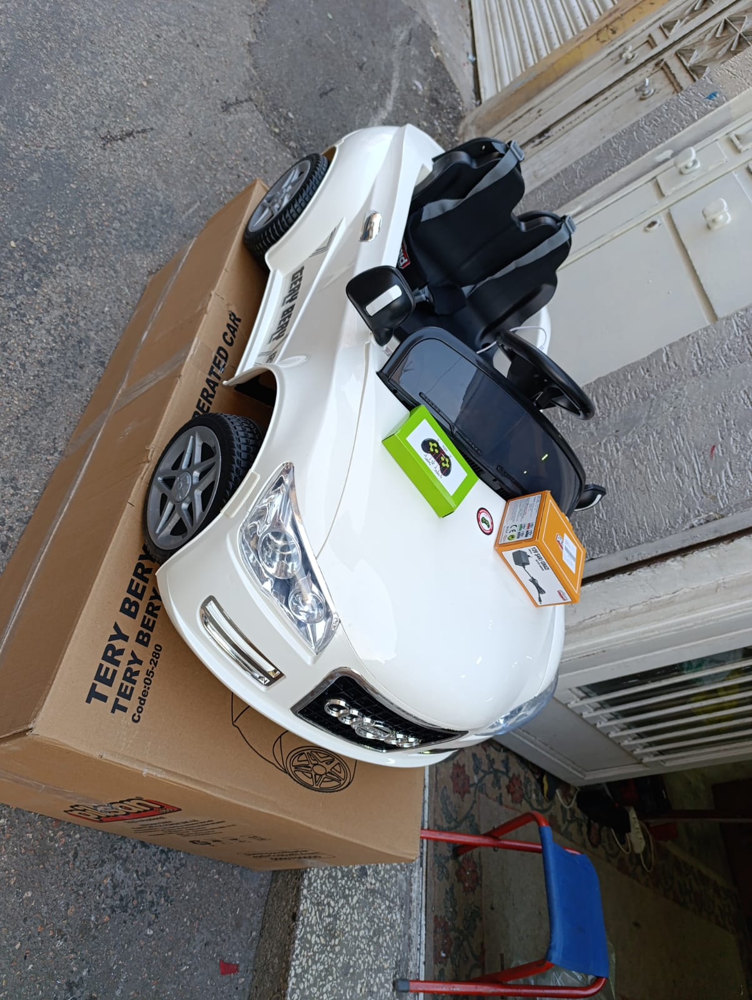
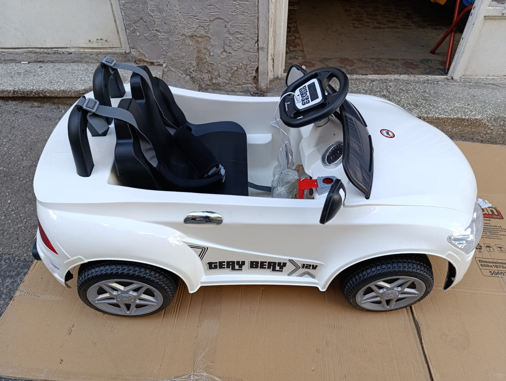
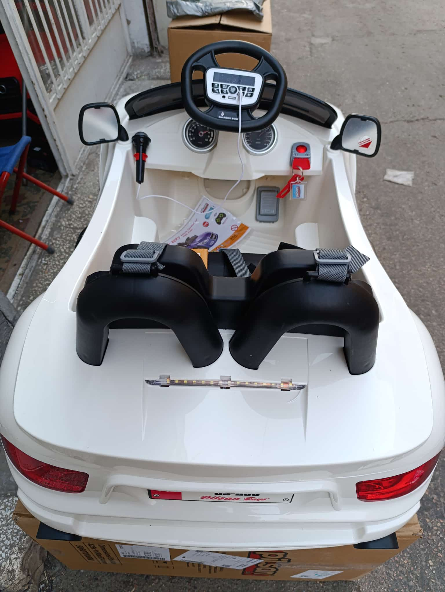
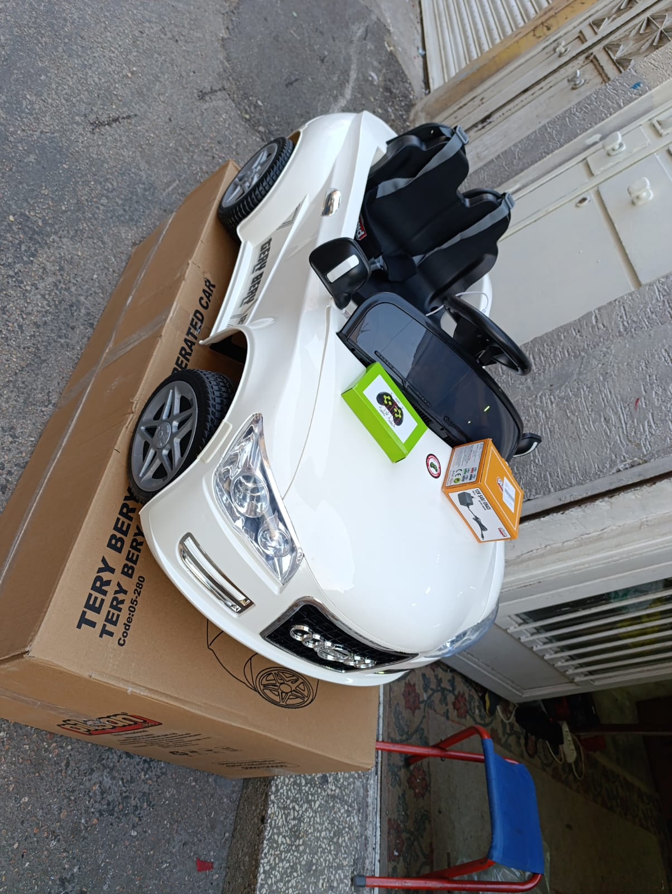
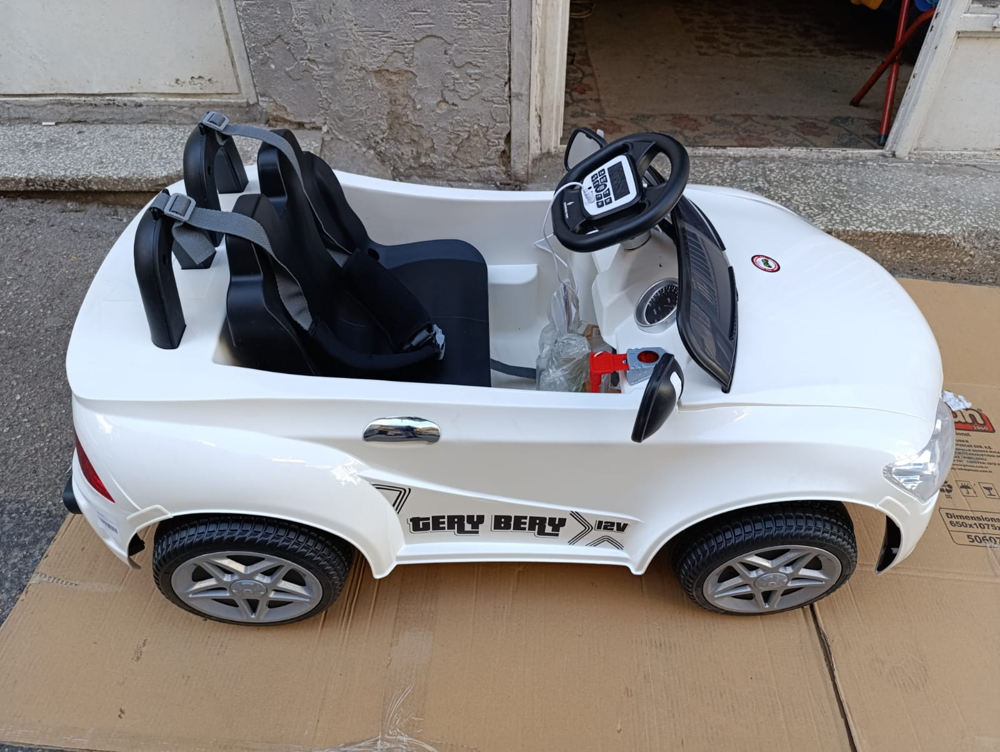
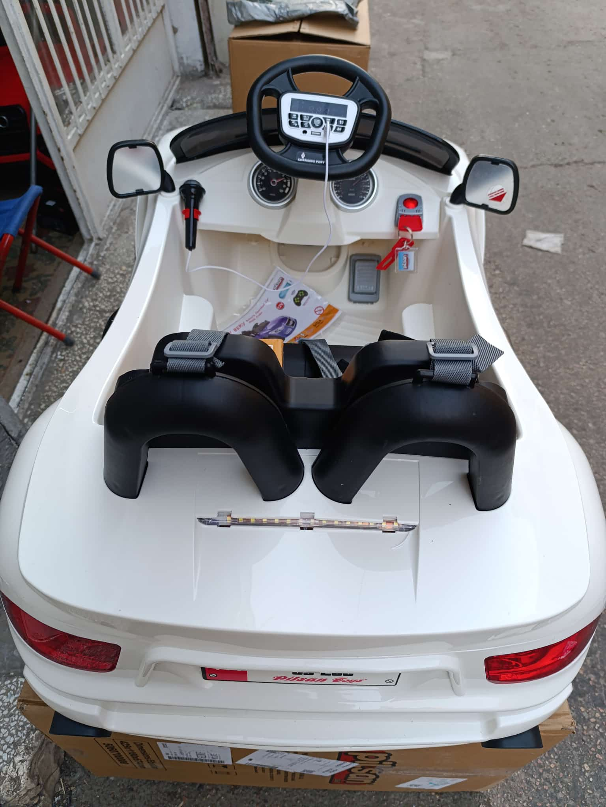
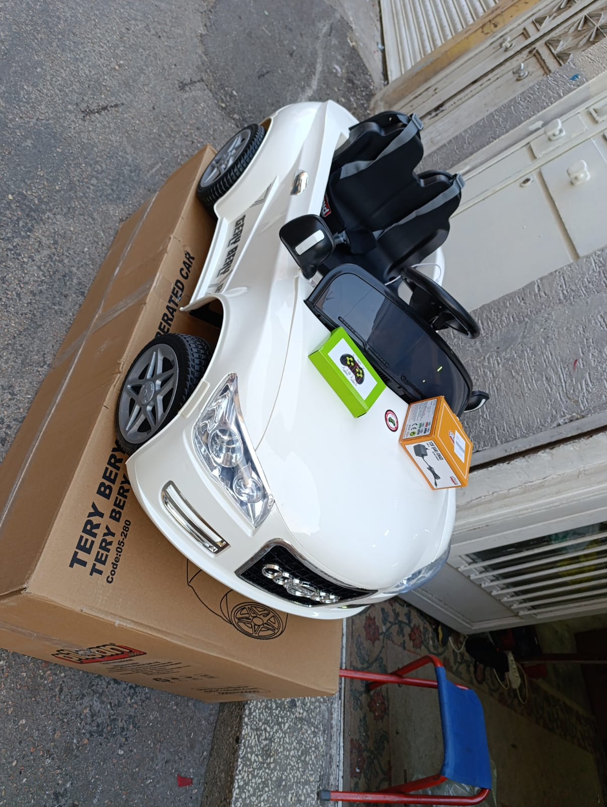
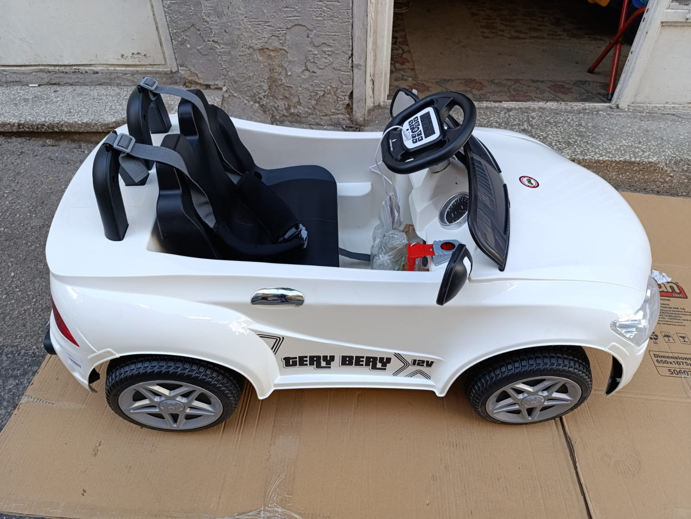
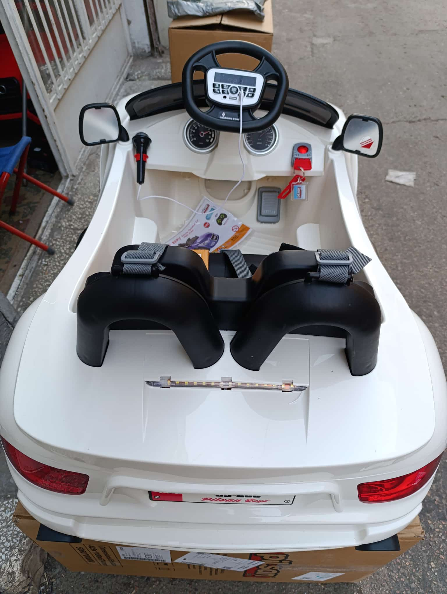

Galeriye Dön
 





Audi Q5 Stil - Beyaz



Teknik Özellikler
Audi Q5'in ikonik tasarımından ilham alan bu beyaz akülü araba, çocuklara lüks ve gerçekçi bir sürüş deneyimi sunar. Parlak beyaz rengi, dikkat çekici ön panjuru, açılabilir kapıları ve konforlu kapitone koltuğu ile minik sürücülerin favorisi olacak. Hem manuel kullanım hem de uzaktan kumanda seçeneği mevcuttur.
- Akü: 12 Volt (Genellikle 7Ah)
- Motor: Çift Motor (Genellikle 2x30W veya 2x35W)
- Hız: 3-7 km/s (Kumandadan 3 hız ayarı)
- Koltuk: Tek Kişilik Lüks Kapitone Deri Görünümlü Koltuk
- Uzaktan Kumanda: 2.4 Ghz Bluetooth (Frenleme fonksiyonlu)
- Aydınlatma: LED Ön Farlar, LED Gündüz Farları/Sis Farları
- Kapılar: Açılabilir ve Kilitlenebilir Kapılar
- Multimedya: MP3 Çalar, USB/SD Kart Girişi, AUX, Dahili Müzikler
- Taşıma Kapasitesi: Maksimum 30-35 kg
- Uygun Yaş Aralığı: 3 - 7 Yaş
- Emniyet Kemeri: Mevcut (Genellikle 2 veya 5 noktalı)
- Süspansiyon: 4 Tekerlek Amortisörlü Süspansiyon (Opsiyonel olabilir)
- Ürün Ölçüleri: (Yaklaşık 115 x 65 x 50 cm - Modelden modele değişebilir)
- Ekstra: Yavaş Başlama (Soft Start), Akü Göstergesi, Korna
- Boya Tipi: Parlak Lake Boya